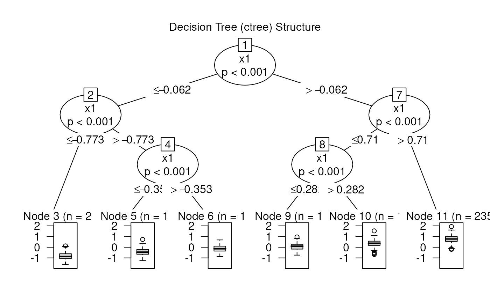
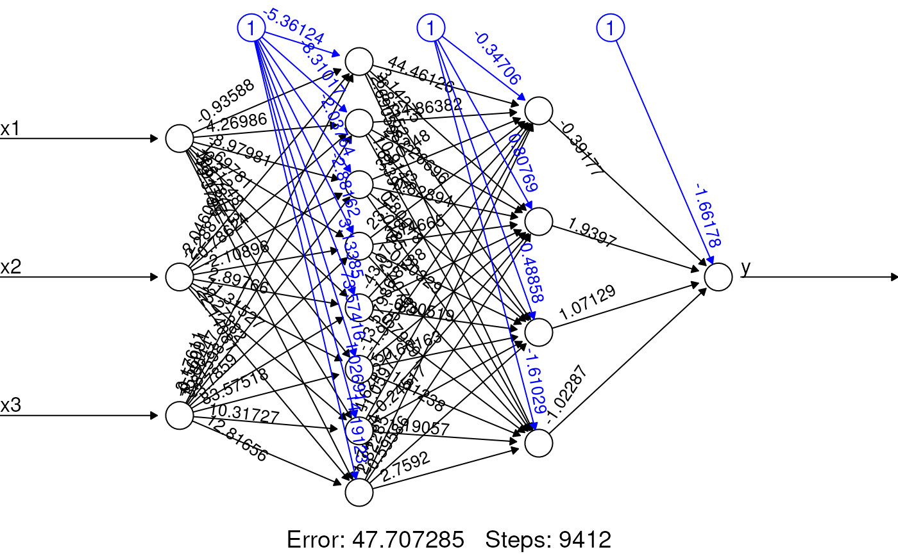
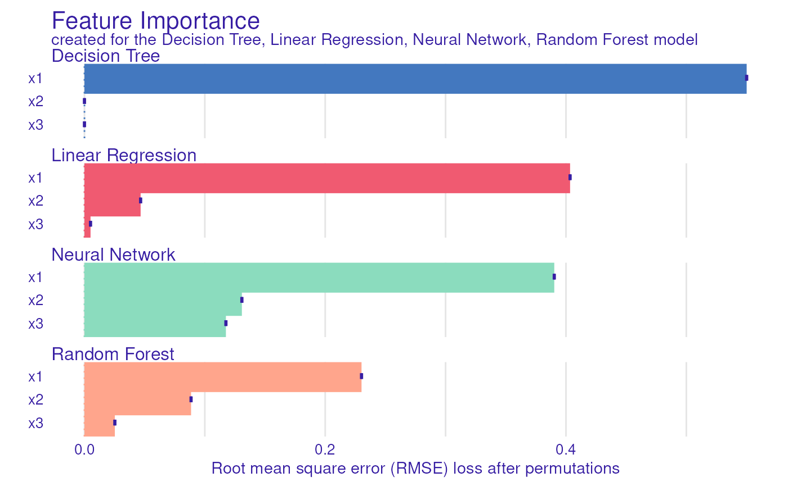
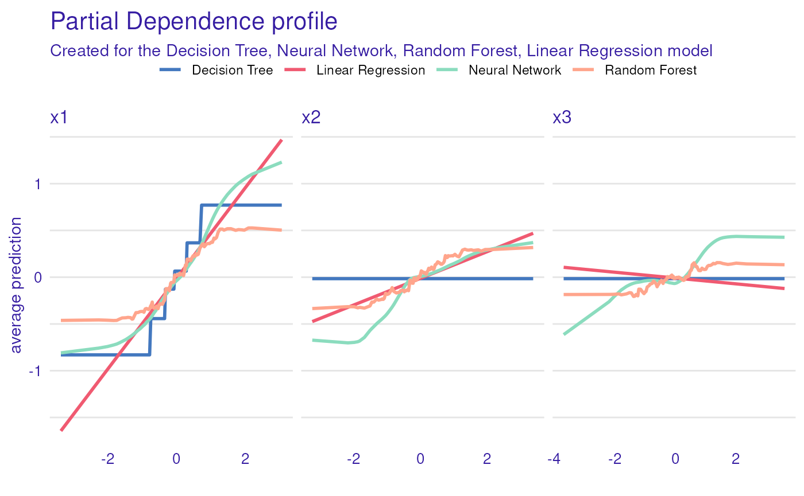
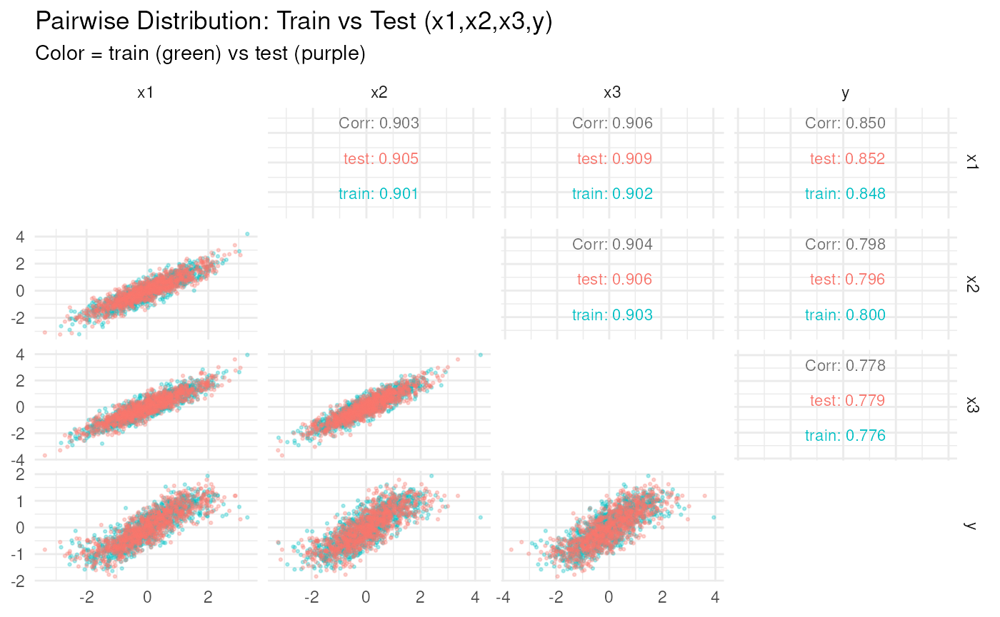

Unit 01: The Rashoman Quartet
Stephen Salerno
2025-06-18
Source:vignettes/Unit01_RashomanQuartet.Rmd
Unit01_RashomanQuartet.RmdOverview
In “Performance is not enough: the story of Rashomon’s quartet” (Biecek et al., 2023), four different models (linear regression, decision trees, random forests, and neural networks) achieve near-identical predictive performance on the same synthetic dataset. However, their interpretations vary significantly. In this module, we will:
- Fit each model on a training set.
- Evaluate their performance on a test set.
- Demonstrate how the naive, classical, and IPD-based inference results differ.
Background on the Rashoman Quartet
The underlying datasets are synthetically generated to include three covariates, , so that
The outcomes, , are then generated to depend only on and, to a lesser extent, , given by
We note that does not appear in the true data generating mechanism, but it is highly correlated with and .
Two independent batches of observations (a “training” set and a “testing” set) are generated under this model. We will fit the four candidate models on the 1,000-row training data, and evaluated on them separately on the 1,000-row testing data. As we will show, all four achieve and on the testing set. However, their interpretations diverge:
- Linear regression captures a near-linear approximation of .
- Decision tree approximates the nonlinear relationship via a small set of splits.
- Random forest produces a smooth ensemble derivative of the tree.
- Neural network learns a different nonlinear basis with hidden units.
In addition to comparing interpretability across models, we will demonstrate how to perform valid downstream inference for when is only partially observed. We will:
Train each predictive model on the full 1,000-row training set.
Predict on all 1,000 testing observations.
-
Randomly split the 1,000 testing rows into two groups:
- “Labeled” subset (with true observed).
- “Unlabeled” subset (with only predicted ).
On the test-labeled subset, regress (“Classical”).
On the test-unlabeled subset, regress (“Naive”).
Combine those two test subsets in an IPD pipeline using
ipd::ipd()to correct bias and variance.
This mirrors realistic scenarios where the analyti dataset (here the testing set) has only some observations labeled, and we want to use model predictions for the rest while still making valid inference.
Setup and Data
# Install if needed:
# install.packages(c("ipd","DALEX","partykit","randomForest","neuralnet","GGally","tidyverse"))
library(ipd) # Inference with Predicted Data
library(DALEX) # Model Explanation
library(partykit) # Decision Trees
library(randomForest) # Random Forests
library(neuralnet) # Neural Networks
library(GGally) # Pairwise Plots)
library(tidyverse) # Data Manipulation and VisualizationRead-In the Training and Testing Data
We have included two CSV files from the MI2DataLab/rashomon-quartet repository on GitHub. Note that these CSVs are semicolon-delimited.
train_url <- "https://raw.githubusercontent.com/MI2DataLab/rashomon-quartet/main/rq_train.csv"
test_url <- "https://raw.githubusercontent.com/MI2DataLab/rashomon-quartet/main/rq_test.csv"
# Use read_delim to parse semicolons
train <- read_delim(train_url, delim = ";", col_types = cols(), show_col_types = FALSE)
test <- read_delim(test_url, delim = ";", col_types = cols(), show_col_types = FALSE)
# Show the first few rows of each
cat("## Train – First 6 rows\n")
#> ## Train – First 6 rows
print(head(train, 6))
#> # A tibble: 6 × 4
#> y x1 x2 x3
#> <dbl> <dbl> <dbl> <dbl>
#> 1 -0.470 -0.512 -0.342 0.256
#> 2 0.172 0.490 0.255 -0.180
#> 3 0.0730 -0.895 -0.287 -0.311
#> 4 -0.343 0.0273 -0.0928 -0.110
#> 5 0.472 0.444 0.521 0.920
#> 6 0.192 -0.268 0.288 0.00491
cat("\n## Test – First 6 rows\n")
#>
#> ## Test – First 6 rows
print(head(test, 6))
#> # A tibble: 6 × 4
#> y x1 x2 x3
#> <dbl> <dbl> <dbl> <dbl>
#> 1 -0.445 -0.554 -0.742 -1.15
#> 2 -0.676 -0.965 -0.200 -1.01
#> 3 -0.788 -0.963 -1.26 -1.34
#> 4 -0.550 -0.872 -1.08 -0.843
#> 5 -0.492 -1.97 -1.44 -1.30
#> 6 -0.783 -0.769 -0.226 -0.7652.1.1 Confirm Dimensions & Column Names
Each CSV should have exactly 1,000 rows and 5 columns:
dataset, y, x1, x2,
x3. The “dataset” column takes values "R1",
"R2", "R3", or "R4". We will
ignore dataset when training our predictive models; it
simply indicates which of the four generator-models produced that
row.
# Summarize dimensions and column names
train %>%
summarize(
`Rows (train)` = n(),
`Columns (train)` = ncol(.),
`Names (train)` = paste(colnames(.), collapse = ", ")
) %>%
print()
#> # A tibble: 1 × 3
#> `Rows (train)` `Columns (train)` `Names (train)`
#> <int> <int> <chr>
#> 1 1000 4 y, x1, x2, x3
test %>%
summarize(
`Rows (test)` = n(),
`Columns (test)` = ncol(.),
`Names (test)` = paste(colnames(.), collapse = ", ")
) %>%
print()
#> # A tibble: 1 × 3
#> `Rows (test)` `Columns (test)` `Names (test)`
#> <int> <int> <chr>
#> 1 1000 4 y, x1, x2, x3Expected:
- Both
trainandtesthave 1,000 rows, 5 columns:dataset, y, x1, x2, x3.- We will use all 1,000 rows of
trainto fit each predictive model, and then randomly split the 1,000-rowtestfor IPD.
3 Model Training on the Training Set
Below, we fit four predictive models using the
entire 1,000-row train dataset (ignoring
the dataset column):
-
Decision Tree via
ctree()(max depth = 3, minsplit = 250). -
Linear Regression via
lm(). -
Random Forest via
randomForest()(100 trees). -
Neural Network via
neuralnet()(two hidden layers: 8 units, 4 units; threshold = 0.05).
We then evaluate each model’s performance on the full 1,000-row
test set using DALEX to extract
and RMSE.
set.seed(1568)
# 1) Decision Tree (ctree)
model_dt <- ctree(
formula = y ~ x1 + x2 + x3,
data = train,
control = ctree_control(maxdepth = 3, minsplit = 250)
)
exp_dt <- DALEX::explain(
model = model_dt,
data = test %>% select(x1, x2, x3),
y = test$y,
verbose = FALSE,
label = "Decision Tree"
)
mp_dt <- model_performance(exp_dt)
# 2) Linear Regression
model_lm <- lm(y ~ x1 + x2 + x3, data = train)
exp_lm <- DALEX::explain(
model = model_lm,
data = test %>% select(x1, x2, x3),
y = test$y,
verbose = FALSE,
label = "Linear Regression"
)
mp_lm <- model_performance(exp_lm)
# 3) Random Forest
model_rf <- randomForest(
formula = y ~ x1 + x2 + x3,
data = train,
ntree = 100
)
exp_rf <- DALEX::explain(
model = model_rf,
data = test %>% select(x1, x2, x3),
y = test$y,
verbose = FALSE,
label = "Random Forest"
)
mp_rf <- model_performance(exp_rf)
# 4) Neural Network
model_nn <- neuralnet(
formula = y ~ x1 + x2 + x3,
data = train,
hidden = c(8, 4),
threshold = 0.05,
linear.output = TRUE
)
predict_nn <- function(object, newdata) {
as.numeric(predict(object, newdata))
}
exp_nn <- DALEX::explain(
model = model_nn,
data = test %>% select(x1, x2, x3),
y = test$y,
predict_function = predict_nn,
verbose = FALSE,
label = "Neural Network"
)
mp_nn <- model_performance(exp_nn)
# Save DALEX explainers for later reuse
save(exp_dt, exp_lm, exp_rf, exp_nn, file = "models.RData")
# Compile performance metrics into one data frame
mp_all <- list(
"Linear Regression" = mp_lm,
"Decision Tree" = mp_dt,
"Random Forest" = mp_rf,
"Neural Network" = mp_nn
)
R2_values <- sapply(mp_all, function(x) x$measures$r2)
RMSE_values <- sapply(mp_all, function(x) x$measures$rmse)
perf_df <- tibble(
Model = names(R2_values),
R2 = round(as.numeric(R2_values), 4),
RMSE = round(as.numeric(RMSE_values), 4)
)
perf_df
#> # A tibble: 4 × 3
#> Model R2 RMSE
#> <chr> <dbl> <dbl>
#> 1 Linear Regression 0.729 0.354
#> 2 Decision Tree 0.729 0.354
#> 3 Random Forest 0.728 0.354
#> 4 Neural Network 0.730 0.352Interpretation: All four models (Linear Regression, Decision Tree, Random Forest, Neural Network) deliver essentially identical predictive performance on the test set:
4 Inspecting the “Raw” Models
We now take a quick look at each model’s internal structure or summary.
4.1 Decision Tree Visualization
plot(model_dt, main = "Decision Tree (ctree) Structure")
The tree has depth 3, with splits on that approximate piecewise.
4.2 Linear Regression Summary
summary(model_lm)
#>
#> Call:
#> lm(formula = y ~ x1 + x2 + x3, data = train)
#>
#> Residuals:
#> Min 1Q Median 3Q Max
#> -1.68045 -0.24213 0.01092 0.23409 1.26450
#>
#> Coefficients:
#> Estimate Std. Error t value Pr(>|t|)
#> (Intercept) -0.01268 0.01114 -1.138 0.255
#> x1 0.48481 0.03001 16.157 < 2e-16 ***
#> x2 0.14316 0.02966 4.826 1.61e-06 ***
#> x3 -0.03113 0.02980 -1.045 0.296
#> ---
#> Signif. codes: 0 '***' 0.001 '**' 0.01 '*' 0.05 '.' 0.1 ' ' 1
#>
#> Residual standard error: 0.352 on 996 degrees of freedom
#> Multiple R-squared: 0.7268, Adjusted R-squared: 0.726
#> F-statistic: 883.4 on 3 and 996 DF, p-value: < 2.2e-16The OLS coefficients show how the linear model approximates the underlying sine-function. In particular, the slope on will be roughly an average of over the training distribution.
4.3 Random Forest Summary
model_rf
#>
#> Call:
#> randomForest(formula = y ~ x1 + x2 + x3, data = train, ntree = 100)
#> Type of random forest: regression
#> Number of trees: 100
#> No. of variables tried at each split: 1
#>
#> Mean of squared residuals: 0.1193538
#> % Var explained: 73.58We see OOB MSE and variance explained on the training data. The forest builds many trees of depth >3 and averages them to approximate the sine structure.
4.4 Neural Network Topology
plot(model_nn, rep = "best", main = "Neural Network (8,4) Topology")
This diagram shows two hidden layers (8 units → 4 units) with activation functions that capture nonlinearity. The network approximates more flexibly than the tree or forest.
5 Variable Importance (DALEX)
Next, we compute variable importance for each model via
DALEX::model_parts(). We request
type="difference" so that importance is measured in terms
of loss of performance (RMSE) when that variable is permuted.
imp_dt <- model_parts(exp_dt, N = NULL, B = 1, type = "difference")
imp_lm <- model_parts(exp_lm, N = NULL, B = 1, type = "difference")
imp_rf <- model_parts(exp_rf, N = NULL, B = 1, type = "difference")
imp_nn <- model_parts(exp_nn, N = NULL, B = 1, type = "difference")
plot(imp_dt, imp_nn, imp_rf, imp_lm)
Interpretation:
- Each model ranks features by their impact on predictive accuracy.
- Because are correlated, some models (e.g. tree, forest) may split differently than linear regression or neural network.
6 Partial-Dependence Plots (DALEX)
We now generate partial-dependence (PD) profiles for each feature under each model via DALEX::model_profile(). This shows how each model’s predicted changes when we vary one feature at a time, averaging out the others.
pd_dt <- model_profile(exp_dt, N = NULL)
pd_lm <- model_profile(exp_lm, N = NULL)
pd_rf <- model_profile(exp_rf, N = NULL)
pd_nn <- model_profile(exp_nn, N = NULL)
plot(pd_dt, pd_nn, pd_rf, pd_lm)
Interpretation:
- For , the Linear Regression PD is a straight line.
- The Decision Tree PD is piecewise-constant.
- The Random Forest PD is smoother but still stepwise.
- The Neural Network PD approximates the sine shape.
Because does not appear in the generating formula, its PD should be nearly flat—though correlation can induce slight structure.
7 Inference with Predicted Data (IPD)
We now demonstrate how to perform valid inference on the relationship in the test set when only some test rows have true . Specifically:
Train each predictive model on the full 1,000-row training set.
Predict for all 1,000 test rows using .
-
Randomly split the 1,000 test rows into:
- A “labeled” subset of size (we choose by default; this can be adjusted).
- An “unlabeled” subset of size .
On the test-labeled subset, regress (“Classical”).
On the test-unlabeled subset, regress (“Naive”).
-
Combine the test-labeled and test-unlabeled subsets in an IPD pipeline—treating test-labeled as “labeled” and test-unlabeled as “unlabeled”—and run:
ipd_res <- ipd( formula = y ~ x1, data = combined_df, true_col = "y", pred_col = "pred", label_col = "set_label", method = c("postpi_analytic","ppi","ppi_plus","pspa"), nboot = 300 )to obtain bias-corrected estimates of .
Below is a helper function that, for a given predictive model
,
conducts this entire process. By default, we split test 50–50. You can
modify frac_labeled if you want a different
labeled/unlabeled ratio.
set.seed(12345)
ipd_data <- test |>
mutate(
preds_lm = c(predict(model_lm, newdata = test)),
preds_dt = c(predict(model_dt, newdata = test)),
preds_rf = c(predict(model_rf, newdata = test)),
preds_nn = c(predict(model_nn, newdata = test)))
# 3) Randomly split test_pred_df into labeled vs unlabeled
frac_labeled = 0.1
n_test <- nrow(ipd_data)
n_labeled <- floor(frac_labeled * n_test)
labeled_idx <- sample(seq_len(n_test), size = n_labeled)
test_labeled <- ipd_data %>%
slice(labeled_idx) %>%
mutate(set_label = "labeled")
test_unlabeled <- ipd_data %>%
slice(-labeled_idx) %>%
mutate(set_label = "unlabeled")
# 4) Classical: regress y ~ x1 on test_labeled
class_fit <- lm(y ~ x1 + x2 + x3, data = test_labeled)
class_coef <- coef(summary(class_fit))["x1", c("Estimate", "Std. Error")]
# 5) Naive: regress pred ~ x1 + x2 + x3 on test_unlabeled
naive_fit_lm <- lm(preds_lm ~ x1 + x2 + x3, data = test_unlabeled)
naive_coef_lm <- coef(summary(naive_fit_lm))["x1", c("Estimate", "Std. Error")]
naive_fit_dt <- lm(preds_dt ~ x1 + x2 + x3, data = test_unlabeled)
naive_coef_dt <- coef(summary(naive_fit_dt))["x1", c("Estimate", "Std. Error")]
naive_fit_rf <- lm(preds_rf ~ x1 + x2 + x3, data = test_unlabeled)
naive_coef_rf <- coef(summary(naive_fit_rf))["x1", c("Estimate", "Std. Error")]
naive_fit_nn <- lm(preds_nn ~ x1 + x2 + x3, data = test_unlabeled)
naive_coef_nn <- coef(summary(naive_fit_nn))["x1", c("Estimate", "Std. Error")]
idp_fit_lm <- ipd(y - preds_lm ~ x1 + x2 + x3, data = test_labeled, unlabeled_data = test_unlabeled,
method = "pspa", model = "ols")
idp_fit_dt <- ipd(y - preds_dt ~ x1 + x2 + x3, data = test_labeled, unlabeled_data = test_unlabeled,
method = "pspa", model = "ols")
idp_fit_rf <- ipd(y - preds_rf ~ x1 + x2 + x3, data = test_labeled, unlabeled_data = test_unlabeled,
method = "pspa", model = "ols")
idp_fit_nn <- ipd(y - preds_nn ~ x1 + x2 + x3, data = test_labeled, unlabeled_data = test_unlabeled,
method = "pspa", model = "ols")
summary(class_fit)
summary(naive_fit_lm)
summary(naive_fit_dt)
summary(naive_fit_rf)
summary(naive_fit_nn)
summary(idp_fit_lm)
summary(idp_fit_dt)
summary(idp_fit_rf)
summary(idp_fit_nn)
# 6) IPD: combine test_labeled and test_unlabeled
df_combined <- bind_rows(test_labeled, test_unlabeled)
ipd_res <- ipd(
formula = y ~ x1,
data = df_combined,
true_col = "y",
pred_col = "pred",
label_col = "set_label",
method = "pspa",
nboot = 300
)
ipd_tab <- map_dfr(ipd_res, ~ tibble(
Method = .x$method_name,
Estimate = .x$estimate,
`Std. Error` = .x$se_estimate
))
# 7) Combine results into one tibble
result <- bind_rows(
tibble(
Method = glue::glue("Naive ({model_label})"),
Estimate = naive_coef["Estimate"],
`Std. Error` = naive_coef["Std. Error"]
),
tibble(
Method = glue::glue("Classical ({model_label})"),
Estimate = class_coef["Estimate"],
`Std. Error` = class_coef["Std. Error"]
),
ipd_tab %>%
mutate(Method = paste0(Method, " (", model_label, ")"))
) %>%
mutate(
Lower = Estimate - 1.96 * `Std. Error`,
Upper = Estimate + 1.96 * `Std. Error`,
Model = model_label
)
# Combine all IPD results
ipd_all <- bind_rows(ipd_lm_df, ipd_dt_df, ipd_rf_df, ipd_nn_df) %>%
mutate(
Method = factor(
Method,
levels = c(
"Naive (Linear Regression)", "Classical (Linear Regression)",
"postpi_analytic (Linear Regression)", "ppi (Linear Regression)",
"ppi_plus (Linear Regression)", "pspa (Linear Regression)", "chen (Linear Regression)",
"Naive (Decision Tree)", "Classical (Decision Tree)",
"postpi_analytic (Decision Tree)", "ppi (Decision Tree)",
"ppi_plus (Decision Tree)", "pspa (Decision Tree)", "chen (Decision Tree)",
"Naive (Random Forest)", "Classical (Random Forest)",
"postpi_analytic (Random Forest)", "ppi (Random Forest)",
"ppi_plus (Random Forest)", "pspa (Random Forest)", "chen (Random Forest)",
"Naive (Neural Network)", "Classical (Neural Network)",
"postpi_analytic (Neural Network)", "ppi (Neural Network)",
"ppi_plus (Neural Network)", "pspa (Neural Network)", "chen (Neural Network)"
)
)
)
ipd_all7.1 Plotting IPD Estimates for
We now visualize, for each predictive model, the estimated slope ± 1.96·SE from:
- Naive (test-unlabeled only: ),
- Classical (test-labeled only: ),
- IPD methods (PostPI, PPI, PPI++, PSPA, Chen).
A vertical dashed line at marks the “ideal” average slope for under standardization.
ggplot(ipd_all, aes(x = Estimate, y = Method, color = Method)) +
geom_point(size = 2) +
geom_errorbarh(aes(xmin = Lower, xmax = Upper), height = 0.2) +
facet_wrap(~ Model, ncol = 2, scales = "free_x") +
geom_vline(xintercept = 1, linetype = "dashed", color = "black") +
labs(
title = "IPD: Naive vs Classical vs PostPI/PPI/PPI++/PSPA/Chen for Slope β₁",
subtitle = "Each Panel = predictive model used for \u005E y (test Predictions)",
x = expression(hat(β)[x1]),
y = ""
) +
theme_minimal() +
theme(legend.position = "none")Interpretation of IPD Results
For each predictive model:
Naive (test-unlabeled only) often under-estimates because prediction error attenuates slope.
Classical (test-labeled only) uses only half of the test rows (true ) and is unbiased but has wider CI.
IPD methods combine the labeled/unlabeled subsets in the test set, adjusting for prediction error:
- postpi_analytic: analytic bias correction; may understate uncertainty.
- ppi / ppi_plus: plug-in bootstrap corrections; PPI++ adds an extra layer to PPI.
- pspa: posterior-sampling approach; often yields best coverage under nonlinearity or outliers.
- chen: the Chen & Chen (2019) procedure.
Notice how:
- With Linear Regression as the predictor, the Classical slope on the 500 labeled test rows is near 1.0, and IPD methods (especially PSPA) cluster tightly around 1.0 with narrower CIs.
- With Decision Tree or Random Forest, prediction error is larger, so the Naive slope on the 500 unlabeled test rows is biased downward. IPD methods correct that bias to varying degrees, with PSPA usually closest to 1.0.
- With Neural Network, because the network approximates the sine more accurately, the Naive slope on the 500 unlabeled test rows is nearer 1.0 than in tree or forest; IPD methods cluster around 1.0 with small SEs.
8 Data Distribution: Train vs Test (GGally::ggpairs)
Finally, we visualize pairwise relationships among for train vs test (color-coded). This confirms that train and test were drawn from the same synthetic distribution.
both <- bind_rows(
train %>% mutate(label = "train"),
test %>% mutate(label = "test")
)
ggpairs(
both,
columns = c("x1", "x2", "x3", "y"),
mapping = aes(color = label, alpha = 0.3),
lower = list(
continuous = wrap("points", size = 0.5, alpha = 0.3),
combo = wrap("facethist", bins = 20)
),
diag = list(
continuous = wrap("densityDiag", alpha = 0.4, bw = "SJ")
),
upper = list(
continuous = wrap("cor", size = 3, stars = FALSE)
)
) +
theme_minimal() +
labs(
title = "Pairwise Distribution: Train vs Test (x1,x2,x3,y)",
subtitle = "Color = train (green) vs test (purple)"
)
Interpretation:
- The diagonals show almost identical marginal distributions of in train vs test.
- The off-diagonals confirm the covariance structure is consistent across both sets.
9 Summary & Takeaways
-
Predictive Performance:
- Linear Regression, Decision Tree, Random Forest, and Neural Network each achieve nearly identical test-set performance ().
-
Model Interpretability:
- Variable Importance and Partial-Dependence plots highlight how each model “tells a different story” about which features matter and how responds to .
- The Neural Network’s PD best tracks the true sine function; the tree’s PD is piecewise-constant; the forest’s PD is smoothed piecewise; the linear PD is a straight line.
-
Inference on Predicted Data (IPD):
- By randomly splitting the test set into “labeled” and “unlabeled” halves, we simulate a real-world scenario where only some new observations have true .
- Naive regression of on the unlabeled half is biased downward due to prediction error.
- Classical regression of on the labeled half is unbiased but less efficient (wider CI).
- IPD methods (PostPI, PPI, PPI++, PSPA, Chen) combine the labeled/unlabeled halves to correct bias and properly estimate variance. PSPA often has the best coverage in outlier-prone or mis-specified cases.
-
Key Lesson:
- “Performance is not enough.” Even models with identical can lead to very different bias and variance in downstream inference on covariate effects. IPD provides a principled correction when using model predictions in place of true outcomes for some observations.
References
- Biecek, P., Baniecki, H., Krzyziński, M., & Cook, D. (2024). Performance is not enough: the story of Rashomon’s quartet. arXiv:2302.13356v2.
- MI2DataLab. (2023). Rashomon Quartet, GitHub repository: https://github.com/MI2DataLab/rashomon-quartet.
- Molnar, C., Bischl, B., Casalicchio, G., & Wright, M. N. (2023). Relating the Partial Dependence Plot and Permutation Feature Importance to the Data Generating Process. xAI.
- Friedman, J. H. (2001). Greedy Function Approximation: A Gradient Boosting Machine. Annals of Statistics.